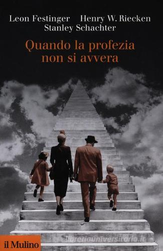

16:32 · 3 OPERE
Perché in così tanti credono nel culto del momento?
Il filo del discorso
Dr Divago propone una propria traduzione e lettura di un articolo di Karen Harradine, presentato come riflessione del 23 ottobre 2020 sull’adesione collettiva alle misure pandemiche. L’analogia con un culto è sviluppata attraverso isolamento, pressione morale e rapporto fra convinzioni e autorità. Il richiamo a Ritorno al mondo nuovo distingue il saggio di Huxley dal romanzo; nella parte finale gli esperimenti di obbedienza e Quando la profezia non si avvera introducono il tema della dissonanza cognitiva. La conclusione torna alla responsabilità individuale e alla possibilità di dissentire.
I libri nel discorso

Ritorno al mondo nuovo
Copertina della raccolta: Mondadori · Oscar Moderni · 2016
Copertina della raccolta Mondadori contenente sia il romanzo sia il saggio Ritorno al mondo nuovo. Il riferimento della scheda riguarda il secondo testo; l’edizione non è accertata nel video.
È nominato Brave New World Revisited, distinguendolo dal romanzo.
Passaggio 2:38 ↗ · Fonti e libro ↗Il mondo nuovo
Copertina della raccolta: Mondadori · Oscar Moderni · 2016
L’immagine mostra il volume Mondadori che riunisce Il mondo nuovo e Ritorno al mondo nuovo. Il collegamento nel video riguarda il primo romanzo, per allusione al titolo inglese; non identifica un’edizione usata dal relatore.
Brave New World è nominato in confronto con il successivo saggio.
Passaggio 2:47 ↗ · Fonti e libro ↗
Quando la profezia non si avvera
Copertina: Il Mulino · Collezione di testi e di studi · 2012
Copertina autentica di riferimento, controllata visivamente. L’edizione non è identificata come quella usata nel video.
È nominato When Prophecy Fails; i coautori sono normalizzati secondo il catalogo.
Passaggio 11:30 ↗ · Fonti e libro ↗